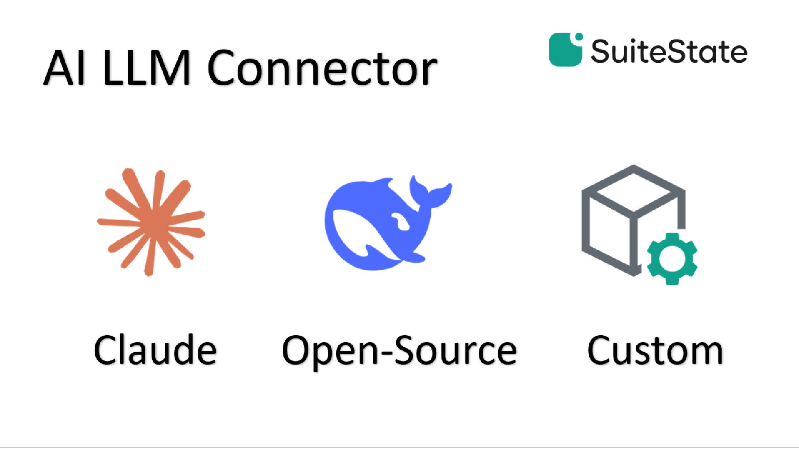
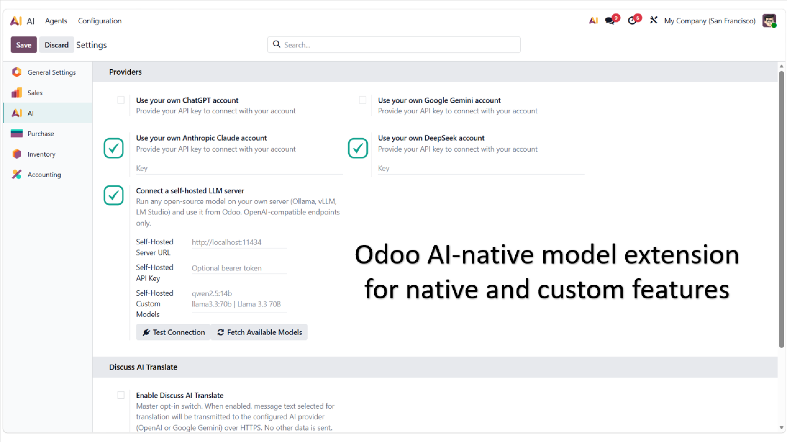
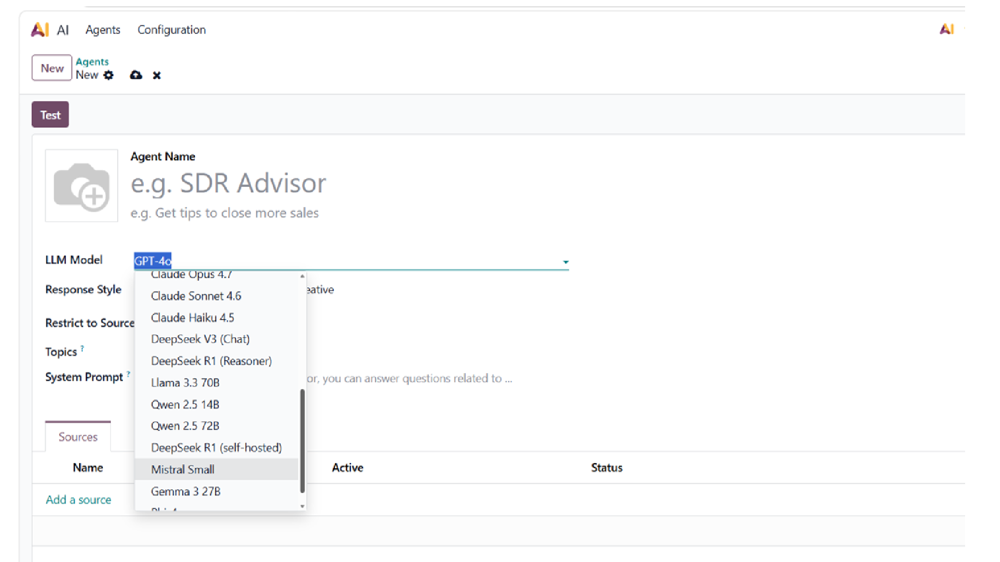

Odoo 19 Enterprise ships with OpenAI and Google Gemini as built-in AI providers. This module registers three additional providers into the same native framework, so they appear in the AI Agent model selector alongside the defaults — no patching, no wrapper, no separate configuration page.
Full Messages API integration with tool calling. Supports Claude
Opus, Sonnet, and Haiku models. API key configured per database
in Settings → AI, or via the ODOO_AI_ANTHROPIC_TOKEN
environment variable.
Chat Completions API with function calling. Supports DeepSeek-Chat
and DeepSeek-Reasoner models. API key configured per database or
via ODOO_AI_DEEPSEEK_TOKEN.
Any endpoint exposing /v1/chat/completions —
Ollama, vLLM, LM Studio, HuggingFace TGI, or a custom deployment.
Type host:port and the /v1 suffix is
added automatically. API key is optional, suitable for local
installs without authentication.
/v1/models on the configured server.
All provider settings live in Settings → AI, in the same section as the native OpenAI and Gemini providers:
host:port input./v1/models endpoint.Multi-company safe. Keys and URLs are stored as system parameters shared across companies.

After installation, Claude, DeepSeek, and your self-hosted models appear directly in the AI Agent model selector. No additional configuration is needed beyond providing the API key or server URL.
ai framework (AI Translate, AI Customer
Service, etc.)ai_app module.api.anthropic.com, api.deepseek.com,
or your self-hosted server.
Released under the GNU Lesser General Public License v3
(LGPL-3.0-or-later). The full license text is included in the
LICENSE file shipped with the module.
Maintained by SuiteState. For questions, bug
reports, or feature requests, visit
suitestate.com or contact
hello@suitestate.com.